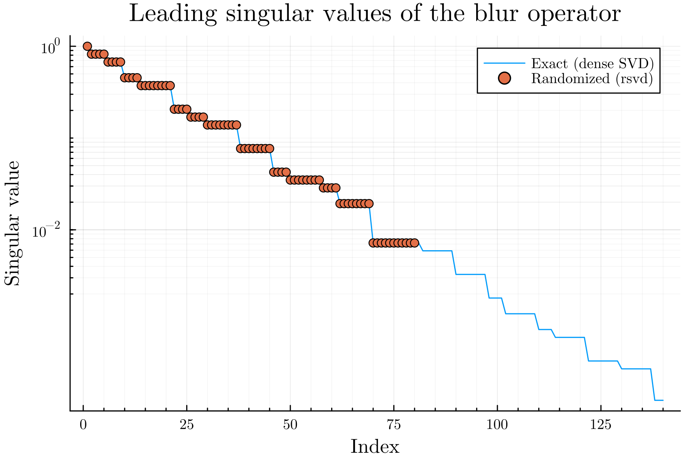
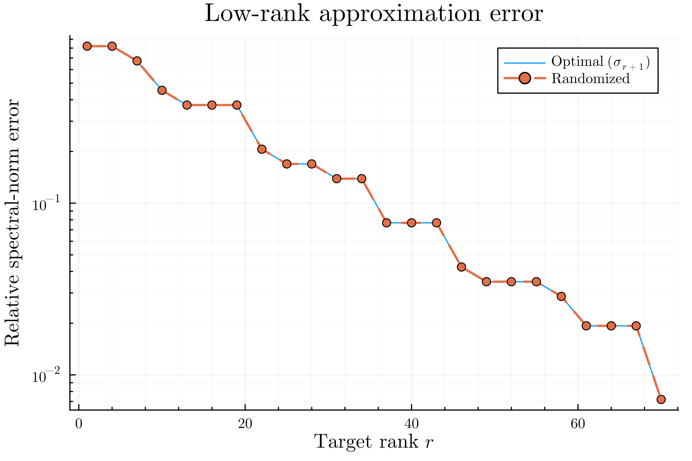
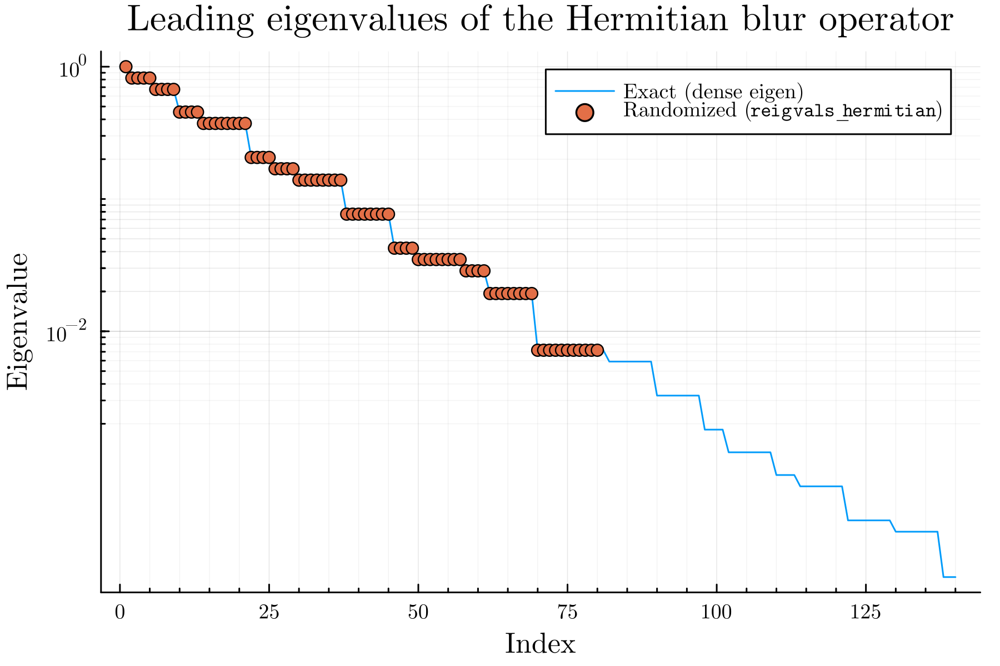
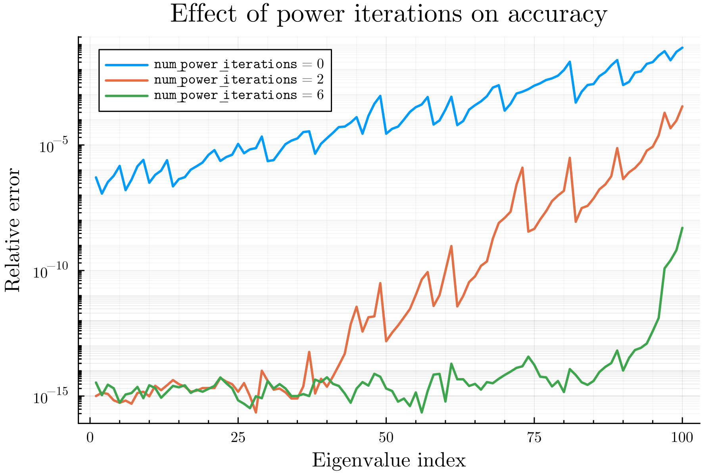
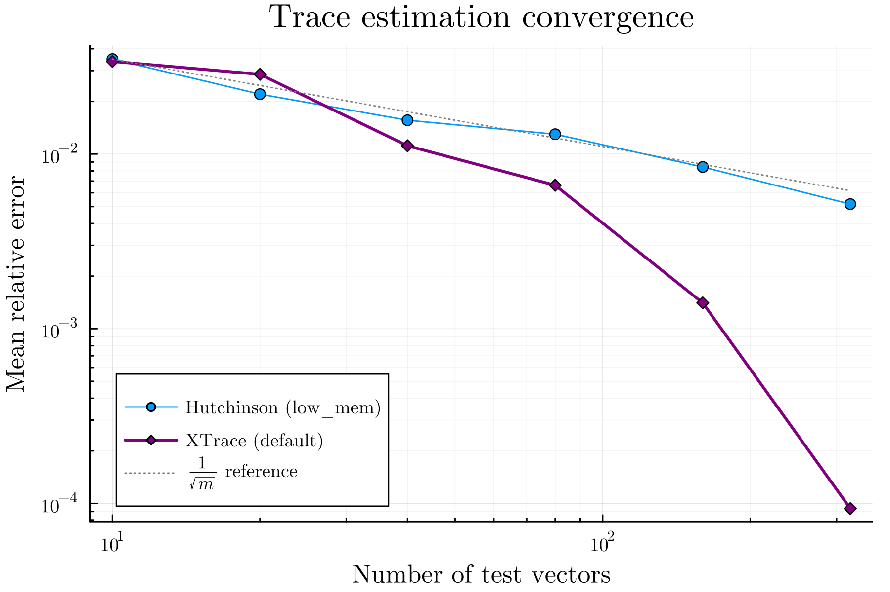
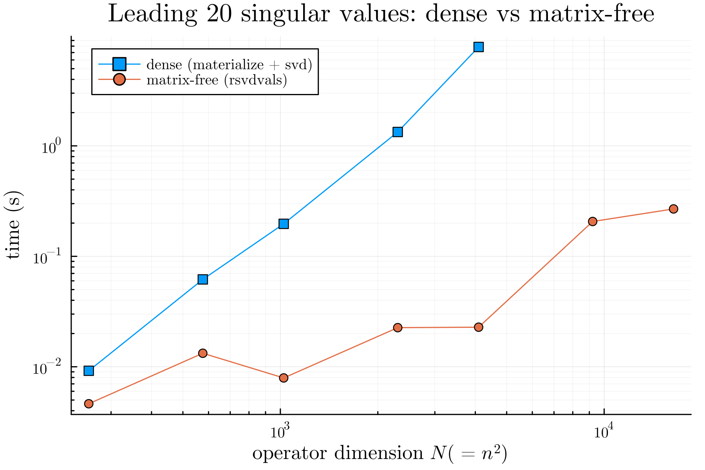

Examples
The examples/ directory has runnable scripts that produce the figures below. They all use the same toy operator, a matrix-free 2D periodic Gaussian blur built from FFTs (see What "matrix-free" means). The matrix it stands for is n² × n² and is never formed, except for a small dense reference used for comparison.
To run them:
julia --project=examples examples/01_rsvd_blur.jl
julia --project=examples examples/02_reigen_hermitian.jl
julia --project=examples examples/03_trace.jl
julia --project=examples examples/04_performance.jlThe shared operator is in examples/operators.jl:
# A matrix-free blur: forward and adjoint are each two FFTs.
function blur_operator(n; sigma = n / 16, shift = (0, 0))
khat = fft(gaussian_psf(n; sigma = sigma, shift = shift)) # transfer function
N = n * n
fwd(x) = vec(real(ifft(khat .* fft(reshape(x, n, n)))))
adj(y) = vec(real(ifft(conj.(khat) .* fft(reshape(y, n, n)))))
return LinearMap{Float64}(fwd, adj, N, N)
endRandomized SVD
examples/01_rsvd_blur.jl runs rsvd on a slightly asymmetric blur operator and compares against a dense svd. The recovered singular values land right on the exact spectrum, and the rank-r approximation error stays close to the optimal σᵣ₊₁.
A = blur_operator(n; sigma = n / 10, shift = (1, 0))
F = rsvd(A, k; num_oversamples = 40, num_power_iterations = 8, sample_vec = Float64[])
# F.U * Diagonal(F.S) * F.Vt ≈ A

Randomized Hermitian eigenvalues
examples/02_reigen_hermitian.jl uses the symmetric (zero-shift) blur, which is Hermitian positive semidefinite, and recovers its leading eigenvalues with reigvals_hermitian, comparing against a dense eigvals.
A = blur_operator(n; sigma = n / 10) # Hermitian PSD
λ = reigvals_hermitian(A, k; num_oversamples = 40, num_power_iterations = 8, sample_vec = Float64[])
The second figure shows the accuracy knob at work. With no power iteration the leading eigenvalues are already reasonable, but the estimates get worse toward the truncation rank. A few power iterations pull the whole curve down close to machine precision, at the cost of extra passes over the operator.

Trace estimation
examples/03_trace.jl estimates tr(A) with both estimators and plots their relative error against the number of test vectors, averaged over many trials. XTrace's leave-one-out correction lets it drop well below the 1/√m rate that the streaming Hutchinson estimator follows.
A = blur_operator(n; sigma = n / 20)
t = trace(A, 100; sample_vec = Float64[]) # XTrace, fixed budget
t2 = trace(A, 100; low_mem = true, sample_vec = Float64[]) # streaming Hutchinson
res = trace(A; relative_tolerance = 1e-2, return_error = true, sample_vec = Float64[])
Performance vs a dense factorization
examples/04_performance.jl times recovering the leading singular values two ways: materialize the operator and call dense svdvals, or call rsvdvals on the matrix-free operator. The dense route is cubic in the operator dimension and needs the whole matrix in memory, so it only runs for the smaller sizes. The matrix-free route keeps going well past the point where forming the matrix stops being practical.

This is the situation the package is for. When the operator is large and you only want a few components, working through matrix-vector products instead of a dense factorization is what keeps the problem tractable.